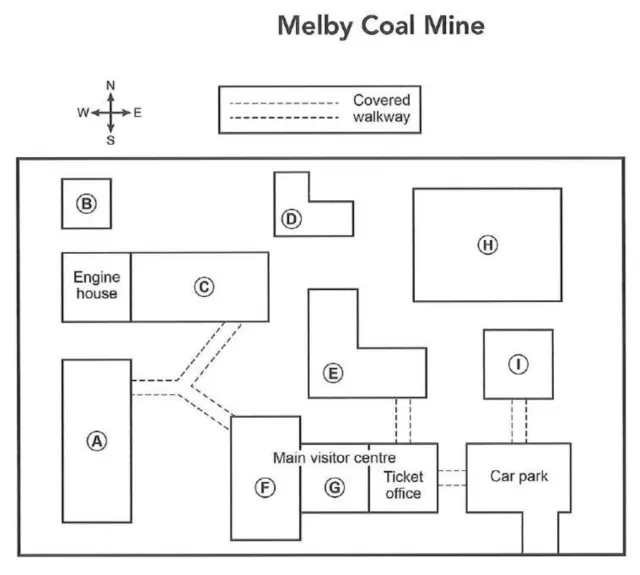

Part 1 of 4
One-day classes at Steynford College
Questions 1–10
Questions 1–10
Complete the table below.
Write ONE WORD AND/OR A NUMBER for each answer.
| Course | Date | Cost | Notes |
|---|---|---|---|
| Vietnamese food | £59 | It provides information on the use of herbs. There are no places at present. | |
| Bread making | 20 March | £ | There is also an extra charge for ingredients. Participants make white bread, sourdough and . |
| Face massage | 23 February | £35 | The teacher trained in . Bring a . |
| Candle making | £52 | Only ingredients are used. The candles can be used as presents. | |
| Silk painting | 18 May | £ | Bring an apron or old . |
| DIY for beginners | 24 February | £125 | Learn how to • use a drill, saw and • put up a shelf. |
Questions 11–20
Choose TWO letters, A-E.
Choose TWO letters, A-E.
Label the map below.
Write the correct letter, A-I, next to Questions 15-20.

Questions 21–30
Choose TWO letters, A-E.
Choose TWO letters, A-E.
Choose TWO letters, A-E.
Complete the flow-chart below.
Choose FOUR answers from the box and write the correct letter, A-F, next to Questions 27-30.
Questions 31–40
Complete the notes below.
Write ONE WORD ONLY for each answer.